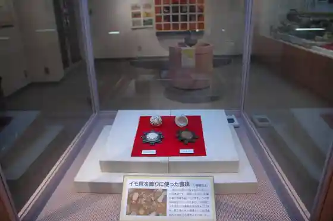
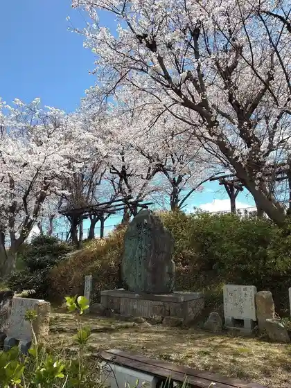
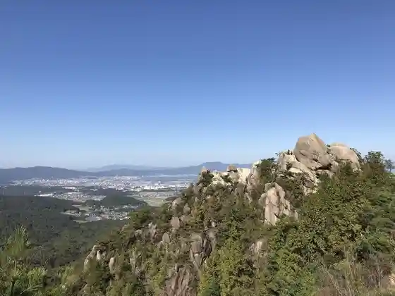
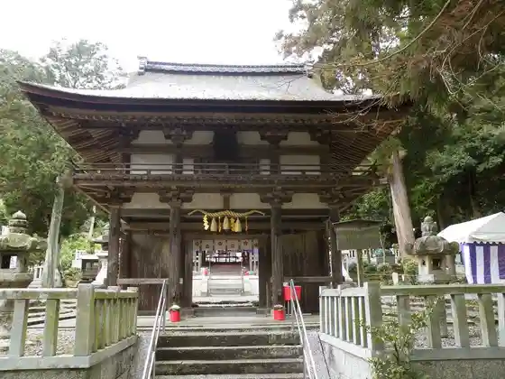

Ritto Shutsudo Bunkazai Center Wada Kofun Park
Ritto, Shiga · 077-553-3359 · Official / source link

Kagi Jinsho Ato (Eisho Tera)
Ritto, Shiga · 077-552-0071 · Official / source link

Kinsho Yama Haikingukosu
Ritto, Shiga · Official / source link

Ono Shrine
Ritto, Shiga · 077-558-0408 · Official / source link

Konze no Sato Bangaro Village
Ritto, Shiga · 077-558-0908 · Official / source link
Roadside Station Aguri no Sato Ritto
Ritto, Shiga · 077-554-7621 · Official / source link
Ritto Tourist Information
Ritto, Shiga · 077-551-0126 · Official / source link
Jiyama Burial Mound
Ritto, Shiga · 077-551-0131 · Official / source link
Anyoji Yama Kanko Doro
Ritto, Shiga · 077-554-1313 · Official / source link
Ritto Tami Gym Ritto Sports Park
Ritto, Shiga · 077-553-4321 · Official / source link
Kinsho Tera
Ritto, Shiga · 077-558-0058 · Official / source link
Wada Kofun Gun
Ritto, Shiga · 077-553-3359 · Official / source link
Shin Zenkoji
Ritto, Shiga · 077-552-0075 · Official / source link
Naki Jizo
Ritto, Shiga · Official / source link
Nandasaka Koma Saka Ishidan
Ritto, Shiga · Official / source link
Kin Shrine
Ritto, Shiga · 077-562-1725 · Official / source link
Te Hara SL Park
Ritto, Shiga · Official / source link
Ritto Yasu Kawa Gym Ritto Yasu Kawa Sports Park
Ritto, Shiga · 077-553-1006 · Official / source link
Ritto Ritsu Shizentai Ken Gakushu Center (Mori no Mirai Kan)
Ritto, Shiga · 077-558-3777 · Official / source link
Ritto Nature Kansatsu Forest
Ritto, Shiga · 077-554-1313 · Official / source link
Koma Saka Magai Hotoke
Ritto, Shiga · 077-551-0126 · Official / source link
Kinsho Sankei
Ritto, Shiga · Official / source link
Uwa Miya Shrine
Ritto, Shiga · 077-551-0126 · Official / source link
Kontai Tera
Ritto, Shiga · 077-558-1568 · Official / source link
Kyu Wachu San Honpo
Ritto, Shiga · 077-552-0971 · Official / source link
Tsubakiyama Burial Mound
Ritto, Shiga · 077-551-0131 · Official / source link
Ritto Kankyo Center
Ritto, Shiga · 077-553-1901 · Official / source link
Kuhon Falls
Ritto, Shiga · Official / source link
Takashi On Tera
Ritto, Shiga · 077-558-0883 · Official / source link
JRA Ritto Toreningu Center
Ritto, Shiga · 077-558-0101 · Official / source link
Kasuga Shrine
Ritto, Shiga · 077-558-0857 · Official / source link
Yokogamine Tembo Tokoro (Mezu Kannon Domae Chushajo)
Ritto, Shiga · Official / source link
JR Te Hara Eki
Ritto, Shiga · Official / source link
Ritto Geijutsu Culture Hall Sakira
Ritto, Shiga · 077-551-1455 · Official / source link
Oka Iseki
Ritto, Shiga · 077-551-0131 · Official / source link
Toreiruadobencha Ritto
Ritto, Shiga · 070-4352-1424 · Official / source link
Foresutoadobencha Ritto
Ritto, Shiga · 090-5794-0420 · Official / source link
Konze Tenma Forest
Ritto, Shiga · 077-558-3858 · Official / source link
Otsuki Taisha
Ritto, Shiga · Official / source link
Toho Yama Anyoji
Ritto, Shiga · 077-552-0082 · Official / source link
Roadside Station Konze no Sato Ritto
Ritto, Shiga · 077-558-3858 · Official / source link
Mannen Tera
Ritto, Shiga · 077-552-0077 · Official / source link
Ritto Rekishi Minzoku Museum
Ritto, Shiga · 077-554-2733 · Official / source link
Hyuga Yama (Taki Yama Castle Ruins)
Ritto, Shiga · Official / source link
Taiho Shrine
Ritto, Shiga · 077-552-2093 · Official / source link